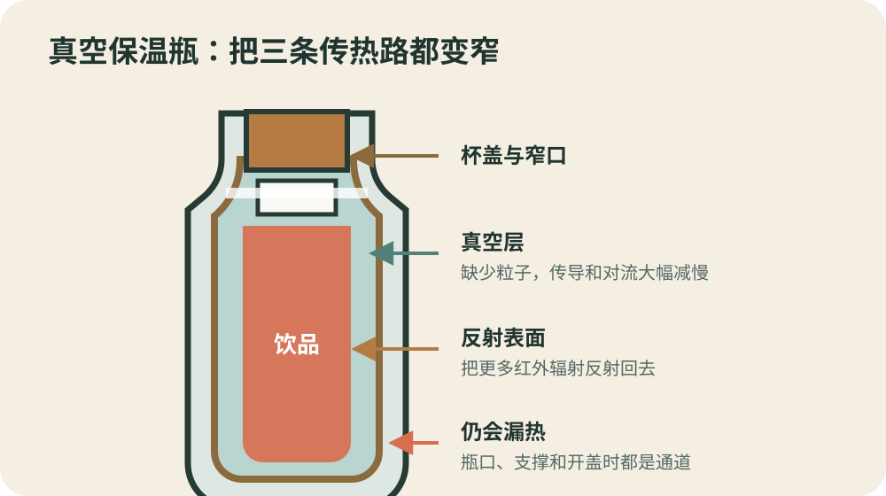
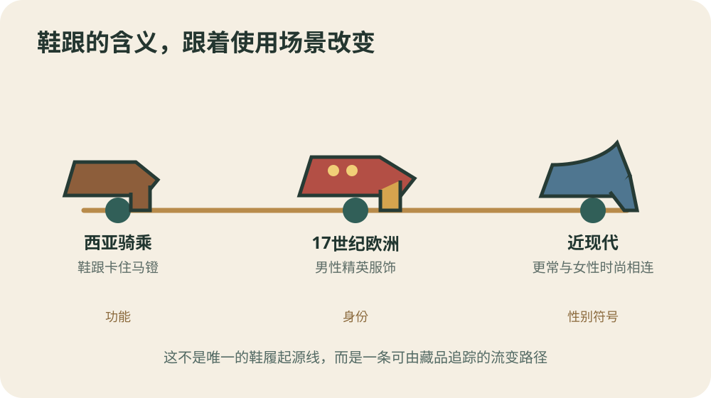
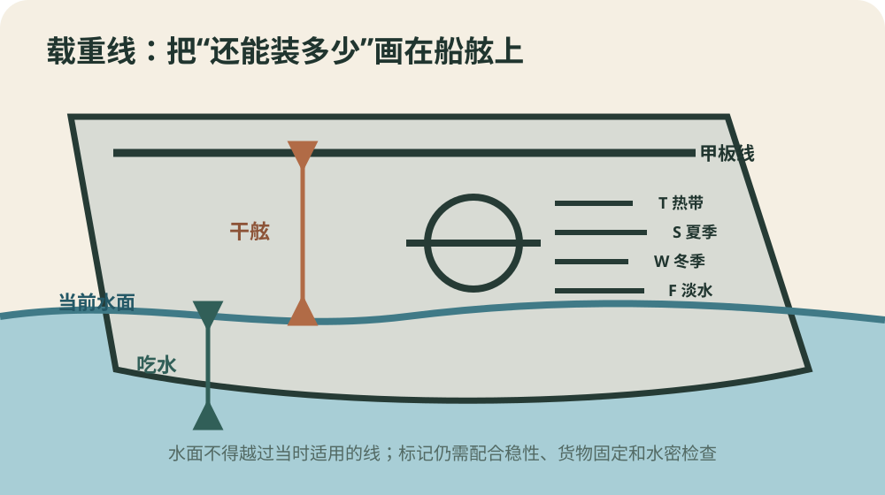

今日热点 01 · 住房 / 公积金
公积金条例9月20日起修改：装修、物业费纳入提取情形
国务院修改《住房公积金管理条例》的决定将于2026年9月20日起施行。提取情形从6种增至9种，灵活就业人员可自愿缴存，贷款审查法定时限由15日缩短到10日。具体怎样办，还要看各地随后公布的细则。
先看生效日
公布不等于当天就能按新办法办理
国务院决定8月18日公布，明确自9月20日起施行。今天可以据此安排材料和关注本地通知，却不能把公布日当成业务受理日，也不能默认每座城市已经改完线上系统。
住房公积金由城市管理中心具体经办。全国条例给出可提取情形和办理框架，装修额度、物业费提取频次、证明材料等操作问题，仍需等所在地管理中心发布规则。
哪些地方变了
提取范围扩到9种，租房门槛和单位证明也有调整
新条文把装修自住住房、支付自住住房物业费，以及国务院批准的其他住房消费情形加入清单。支付房租不再要求房租超过家庭工资收入规定比例。
职工申请提取时，不再由所在单位核实并出具提取证明。公积金中心受理后，应在3日内决定是否准予提取；贷款申请的审查时限则从15日缩短到10日。这里的“日”应按法规原文理解，不能自行改写成工作日。
谁能加入
灵活就业人员有了自愿缴存入口，但地方办法决定实际路径
个体工商户、非全日制从业人员和其他灵活就业人员可以自愿缴存，并按规定享受政策支持。条例没有把自愿改成强制，也没有用一套全国统一金额覆盖各地。
决定同时要求推动缴存记录全国互信互认，便利转移接续和异地贷款。互认不等于各城贷款额度、首付比例和资格条件完全一致；跨城使用前，仍要分别核对缴存地与购房地规则。
办事时怎么用
先查本地实施日期，再问额度、材料和线上入口
9月20日后准备提取装修费或物业费，可按三个问题核对：当地细则是否已经生效，哪些住房算“自住住房”，发票、合同或缴费记录需要到什么程度。
若客服只说“新规已出台”，还应追问具体办事指南和系统上线日期。法规确认了权利入口，真正能否一次办成，取决于地方规则和材料是否对得上。
9月20日起，公积金提取情形增至9种，灵活就业人员可自愿缴存；具体额度、材料和系统上线时间仍看当地细则。
查看事实与延伸来源
国务院决定全文：20项修改与9月20日生效日
司法部、住房城乡建设部答问：修改理由与执行边界
新华社8月19日解读：提取、互认和灵活就业试点数据
香港中通社：新规要点与实施日期的独立报道
今日热点 02 · 网球 / 反兴奋剂
克耶高斯因可卡因阳性被临时禁赛：临时措施不是最终判罚
国际网球诚信机构确认，澳大利亚球员尼克·克耶高斯的一份赛内样本检出可卡因代谢物，他自8月4日起被强制临时禁赛。案件仍在处理，当前状态限制参赛，却还不是最终禁赛年限。
时间线
样本、实验室确认和临时禁赛分属三个节点
样本采于6月22日马略卡ATP 250赛事期间。实验室在7月17日报告苯甲酰爱康宁阳性，这是可卡因的代谢物；ITIA随后从8月4日起实施强制临时禁赛。
克耶高斯8月19日公开谈到此事。公告时间、球员发声时间与禁赛起算日并不相同，判断他何时失去参赛资格，应看正式措施的起始日期。
程序是什么
临时禁赛先保护赛事，最终处分要等事实与规则适用查清
反兴奋剂程序允许在案件审理前先限制球员参加受ITIA成员授权的比赛和相关活动。球员可以挑战相关决定，但ITIA称克耶高斯没有对这次临时禁赛提出上诉。
这一步不等于机构已经认定最终责任，也不等于最高年限会自动落下。物质摄入时间、是否与运动表现有关、球员解释和证据，都会影响后续处理。
为什么可卡因也在规则里
赛内禁用和赛外使用不是同一个问题
世界反兴奋剂禁用清单把可卡因列为赛内禁用的兴奋剂，也归入“滥用物质”。因此，新闻不能只问它是否提升网球表现，还要先确定样本是不是在赛内时段采集。
若运动员能够证明摄入发生在赛外且与运动表现无关，规则可能适用不同的处分路径。那仍需证据判断，不能从一次阳性结果直接替案件写好结局。
克耶高斯从8月4日起处于强制临时禁赛；阳性样本和参赛限制已确认，最终责任与禁赛期限尚未定案。
查看事实与延伸来源
ITIA公告：检测时间、代谢物与临时禁赛状态
美联社8月19日：案件时间线、球员回应与程序说明
ITIA 2026反兴奋剂规则：临时措施和滥用物质条款
今日热点 03 · 医学 / 临床试验
个体化mRNA黑色素瘤疗法Ⅲ期报捷：关键数字尚未公布
默沙东与Moderna宣布，个体化新抗原疗法intismeran联合帕博利珠单抗，在高风险黑色素瘤Ⅲ期试验的无复发生存和无远处转移生存终点上优于对照。公司暂未公布效应量、总生存和完整安全数据。
试验怎么做
手术后约1100名患者，比较联合治疗与帕博利珠单抗单药
INTerpath-001是一项随机、双盲、安慰剂和活性对照的Ⅲ期试验，注册计划纳入1089名已经完整切除、但复发风险较高的ⅡB至Ⅳ期黑色素瘤患者。
两组都接受帕博利珠单抗；试验组加用按患者肿瘤突变设计的intismeran，对照组加安慰剂。它研究的是术后辅助治疗，不是给所有晚期癌症患者打一针通用疫苗。
公司宣布了什么
两个终点达到，但“达到”还不能告诉我们获益有多大
公司称，无复发生存和无远处转移生存两个预设终点均达到统计标准。也就是说，联合治疗组在癌症复发或发生远处转移方面表现更好。
公告没有给出风险比、绝对复发率、随访中位数或完整不良反应表。没有这些数字，读者无法判断多少患者实际受益，也无法把统计学显著直接换算成个人获益。
现在能下什么结论
这是Ⅲ期顶线成功，不是批准上市，也不是治愈结论
顶线结果是公司对关键终点的先行摘要，完整数据计划在国际医学会议公布。监管机构还需要审查试验设计、疗效幅度、随访、安全性和生产一致性，才会决定是否批准。
总生存数据目前没有公布，试验也会继续随访。报道可以说“降低复发和远处转移风险的终点达到”，不能改写成“延长了全部患者寿命”或“癌症疫苗已经可用”。
为什么叫个体化
每位患者的制剂按肿瘤突变信息设计
研究团队会分析患者肿瘤，选择可能被免疫系统识别的新抗原，再用mRNA编码这些靶点，制成该患者专用的治疗。它与预防传染病的通用疫苗在生产和用途上都不同。
个体化也带来现实问题：取样、测序、算法选择、生产周期和质量控制必须逐例完成。即使疗效数据最终支持批准，交付速度和成本仍会决定多少患者能真正用上。
Ⅲ期试验两个复发相关终点达到，但效应量、总生存和完整安全数据未公布；顶线成功不等于已经获批。
查看事实与延伸来源
默沙东与Moderna公告：Ⅲ期顶线结果及尚待公布的数据
ClinicalTrials.gov：试验设计、分期与计划入组数
美联社8月19日：结果范围与未公布数字
Axios 8月19日：产品定位与监管前景
涉猎 01 · 日用品 / 热学
保温杯为什么冷热都能保：它只是让热走得更慢
真空层减少传导和对流，反光表面削弱热辐射，窄口和杯盖压低剩余热交换。它没有辨认咖啡或冰水，只是同时拖慢热量向外走和向内来。

真空层主要削弱传导和对流，反射层减少辐射；杯口与支撑处仍会传热。原创示意，不按比例。
三条传热路
真空挡住两条，镀银表面再处理第三条
热量可以经固体接触传导，随流体运动对流，也能以电磁辐射穿过真空。保温瓶把内外壁之间抽成低压空间，那里缺少足够粒子，传导和对流都大幅减慢。
真空挡不住热辐射，所以早期玻璃瓶会在相对表面加反射层，把更多红外辐射反射回去。现代金属保温杯的材料不同，仍沿用减少三类热交换的思路。
为什么还有杯盖
瓶口是结构必须连接的地方，也是最难隔热的通道
内胆不能凭空悬着，瓶口和支撑处总要有材料连接，热可以沿这些固体路径传导。把瓶颈做窄，能缩小连接截面；软木或塑料杯盖导热较慢，也限制杯内空气交换。
开盖后，热空气和水汽直接进出，保温性能会明显下降。杯盖密封不良、内外壁之间的真空受损，也会让一只原本好用的杯子很快失去保温能力。
它从哪里来
1892年的器具原本为低温实验服务
詹姆斯·杜瓦为研究液化气体制作双层玻璃真空瓶。英国皇家研究院藏品记录，这种窄颈瓶在1892年圣诞节首次于该院展示，后来又加入更窄瓶颈和镀银表面。
杜瓦没有为它申请专利。1904年，德国玻璃工把这一结构工业化并以Thermos之名推广。实验室里延缓液体蒸发的容器，由此进入了普通人的午餐袋。
保温瓶不制造冷或热；真空层削弱传导和对流，反射层减少辐射，窄口与杯盖压低剩余热交换。
查看事实与延伸来源
英国皇家研究院：杜瓦真空瓶实物、结构与1892年记录
昆士兰大学物理博物馆：传导、对流和辐射路径
涉猎 02 · 服饰 / 社会史
高跟鞋最早不是女鞋：马背工具怎样进入欧洲男装
鞋跟早在西亚就用于骑马，让脚在马镫中更稳。16世纪末传入欧洲后，它先成为男性精英服饰的一部分，后来才逐渐被强烈地编码为女性时尚。今天的性别印象不是鞋跟从诞生起就带着的。

鞋跟的用途与性别含义随环境变化：马镫支撑、欧洲精英男装，再到后来的女性时尚。原创时间线，造型为概念示意。
先看功能
鞋跟卡住马镫，让骑手更容易稳定脚掌
Bata鞋履博物馆指出，鞋跟并非欧洲发明，它在西亚早已用于骑马。脚跟抬起、后跟形成台阶后，骑手的脚不容易整个滑穿马镫，站起射箭或操控坐骑时更稳。
这并不等于今天所有高跟鞋都直接从某一双军靴演变而来。鞋底抬高、厚底与独立鞋跟在多地出现过；这里能明确追踪的是西亚骑乘鞋跟影响欧洲的一条路径。
进入欧洲
16世纪末以后，实用结构变成身份和姿态
欧洲人在16世纪末采用这种鞋跟，17世纪的男性上层服饰里已经能看到高跟鞋。博物馆藏品中的男鞋常用昂贵皮革、染色和装饰，把原本适合马镫的结构改造成宫廷身份标记。
穿高跟鞋会改变站姿，也不利于长距离劳动。正因为它不强调实用，反而能显示穿着者有资源、有仆役、无需步行太远。鞋跟从工具变成社会符号，靠的是使用场景改变。
性别何时改变
男鞋后来降低鞋跟，女性时尚保留并重新解释它
18世纪以后，欧洲男装逐渐转向克制、实用的轮廓，高跟鞋在主流男装中退去。女性鞋履则继续发展更细、更高的鞋跟，并在19至20世纪与身体曲线、优雅和性感联系起来。
这种联系很牢，却不是天然规则。西部靴、舞台靴和部分男装设计一直保留鞋跟。看到一双鞋时，材料和形状固然重要，谁在什么场合穿、社会怎样解释它，同样决定含义。
西亚骑乘鞋跟在16世纪末进入欧洲，17世纪曾是男性精英服饰；它与女性气质的强绑定，是后来形成的社会含义。
查看事实与延伸来源
Bata鞋履博物馆：男性鞋跟的西亚来源与欧洲流变
FIT博物馆：馆藏最早的17世纪高跟男鞋
FIT《鞋：解剖、身份与魔法》：鞋履与身份的关系
涉猎 03 · 航运 / 安全规则
船舷上的圆圈和横线管什么：它限制船能压进水里多深
载重线标在船体两侧，告诉港口和船员在特定水域、季节与水密条件下，船最多可以下沉到哪里。线仍露在水面之上，不代表整艘船万无一失；它只守住超载风险的一道硬边界。

水面不能越过适用的载重线；水面到甲板线的垂直距离是干舷。实际标记依船型、季节和水域而定。原创示意。
它量的是什么
装得越重，吃水越深，留在水面上的船体越少
货物增加后，船会下沉，直到排开水的重量与船的总重量平衡。水线到船底的深度叫吃水；水线到甲板线附近的高度叫干舷，它代表一部分储备浮力和抗进水余量。
载重线给出允许的最大吃水。若适用标记已经没入水下，说明船装得太深。把多装一点货换成更小的干舷，会让浪更容易上甲板，也增加水密完整性和船体受力风险。
为什么不只一条线
季节、海区和水密条件不同，允许的干舷也不同
国际海事组织的《国际载重线公约》考虑不同海区和季节的危险程度。冬季海况通常更苛刻，需要保留更大安全余量；淡水密度低，同一艘船也会比在海水里沉得更深。
因此，圆圈旁会配有多条短横线和字母，船员要按当时适用的水域与季节判断。这些线不能任选；每一条都把特定环境写进了装载上限。
为什么叫普利姆索尔线
19世纪的争论，把船东自定界线变成公共安全规则
英国议员塞缪尔·普利姆索尔长期推动限制“棺材船”超载。1870年代议会记录显示，争议焦点之一正是载重线应由船东自行标定，还是由官方规则和检查来约束。
今天通行的是国际公约下的载重线、检验和证书体系，不是普利姆索尔本人当年的一条固定线。名字保留了改革史，实际位置则由船型、结构和现行计算规则决定。
它不能保证什么
不超线仍要管稳性、货物固定和舱口水密
载重线主要控制装载深度和干舷。货物若偏在一侧、甲板货没有固定、舱口关不严，船仍可能倾斜、进水或失稳。英国海事指南因此把稳性资料、载重线证书与检查放在一起。
这条线的价值在于把“还能不能再装”从讨价还价变成可见、可查的限制。它不是完整的适航证明，却让超载更难躲在账本和经验判断里。
载重线限定特定条件下的最大吃水，用干舷保留浮力和抗进水余量；它要与稳性、货物固定和水密检查一起使用。
查看事实与延伸来源
国际海事组织：1966年载重线公约、季节海区与证书
英国政府海事指南：稳性资料、载重线和检查要求
英国议会1876年记录：普利姆索尔与官方载重线争论
“一个人确信某个假说为真的强烈程度，与这个假说究竟是真是假毫无关系。”
彼得·梅达沃《给青年科学家的忠告》（1979） · 本刊译
梅达沃紧接着说，信念的强度最多能提供检验假说的动力，不能替代检验本身。研究者当然会偏爱自己的解释，真正的纪律是设计可能推翻它的观察，并在反例出现时改写判断。把语气坚定当成证据，是实验室、会议室和家庭争论都会犯的错。越在乎一个答案，越该主动找它的薄弱处。
核对原文与语境
“不了解两者，就既无法理解一个人的生活，也无法理解一个社会的历史。”
C. 赖特·米尔斯《社会学的想象力》（1959） · 本刊译
米尔斯要求把个人困扰与公共议题放进同一幅图里。失业可能涉及个人技能，也可能来自行业收缩；房租压力落在每个家庭账本上，却与土地、信贷和供给制度相连。这个视角仍保留个人责任，同时提醒我们：解释一段人生，不能把它从时代结构中剪下来。个人故事和统计数字，要互相校正。
核对原文与语境
“科学与日常生活不能、也不应当被分开。”
罗莎琳德·富兰克林《致父亲埃利斯·富兰克林的信》（1940） · 本刊译
富兰克林十九岁时写下这句话，回应父亲对科学让人眼光单一的担心。她没有把科学说成包办一切的信仰，而称它只能部分解释生活，依据是事实、经验和实验。科学进入日常，意味着吃药、看数据和谈风险时接受可检验的约束，而不是给每个选择披上一件白大褂。它提供方法，不替人包办价值选择。
核对原文与语境
“大略如行云流水，初无定质，但常行于所当行，常止于不可不止。”
苏轼《与谢民师推官书》（1100）
苏轼谈的是文章的自然与分寸。“无定质”不是想到哪里写到哪里，后半句恰好规定了约束：意思该展开时让它走，已经说足时就停。流动感来自判断，而不是省略结构。修改一篇稿子时，与其先追求漂亮句式，不如检查每一段为何出现、又该在何处收住。删掉多余一句，有时比补一句更见功夫。
核对原文与语境
“写作在其最好的状态下，是一种孤独的生活。”
欧内斯特·海明威《诺贝尔奖晚宴致辞》（1954） · 本刊译
海明威随后说，作家组织或许能缓解孤独，却未必改善作品。编辑、读者和同伴当然不可少；他谈的是最后那一轮判断无法外包：句子是否诚实，结构是否站得住，作者得独自面对。协作可以提供材料和批评，署名者仍要为取舍负责，这也是创作的自由所附带的成本。热闹能扶人上路，不能替人落笔。
核对原文与语境